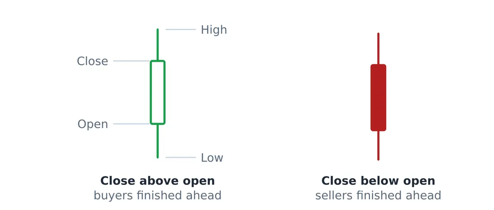
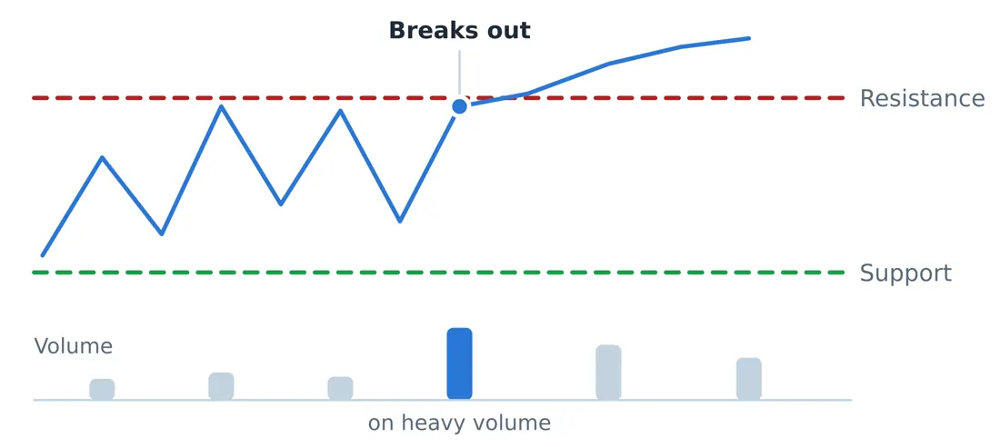

Library / MiyeeStockBuddy: The Complete Guide to Indian Markets
Part 5. Technical Analysis: Reading the Chart
Fundamental analysis tells you what is worth owning. Technical analysis is about when, and it works on a completely different assumption: that the price already contains everything known, and that the pattern of buying and selling reveals what a crowd of people is about to do next.
It is worth being honest about what this can and cannot do. A chart cannot tell you the future. What it can do is show you where large numbers of people have previously changed their minds, and those levels tend to matter again, because people remember them.
5.1 How To Read a Candlestick
One candle is four prices compressed into a shape: where trading opened, where it closed, and the highest and lowest points in between. The thick part is the body, running from open to close. The thin lines above and below are wicks, reaching the high and the low.

Closed up (hollow) · Closed down (filled)
Figure 1. One candle packs four prices into a shape: the body runs from open to close, and the thin wicks reach the high and the low. A hollow body closed up, a filled body closed down.
The body tells you who won the session. A long green body means buyers controlled it from open to close. A long red body means sellers did. A tiny body with long wicks on both sides means the two sides fought all day and neither won, which is genuine information: it usually appears at turning points.
Shape | What it looked like on the day | What it often signals | |
|---|---|---|---|
Long green body, small wicks | Buyers pushed all session and closed near the high | Strength, often continues | |
Long red body, small wicks | Sellers pushed all session and closed near the low | Weakness, often continues | |
Doji: open and close nearly equal | A tug of war with no winner | Indecision, watch the next candle | |
Hammer: long lower wick, small body at top | Price fell hard, then buyers took it all back | Possible bottom, needs confirmation | |
Shooting star: long upper wick, small body at bottom | Price rose hard, then sellers took it all back | Possible top, needs confirmation | |
The rule to remember A single candle is a sentence, not a story. A hammer in the middle of a range means nothing. The same hammer after a long fall, on heavy volume, at a level that stopped the price twice before, means something. Context is most of the signal. | |||
Individual candles are only the vocabulary. The shapes they form over weeks, and the entry, stop and target that go with each one, are covered in their own part with a drawn chart for every pattern.
5.2 Support, Resistance and the Breakout
Support is a price level where buyers have repeatedly appeared and stopped a fall. Resistance is where sellers have repeatedly appeared and stopped a rise. They are not lines drawn by magic; they are places where a lot of people previously made a decision, and they remember it.

Figure 2. Price bumps the same ceiling three times and falls back each time. The fourth attempt closes above it on much heavier volume, which is what separates a real breakout from a trap. The old ceiling then tends to act as the new floor.
Think of it like this Imagine a ceiling in a room. A balloon rises and bumps it three times. Each time it comes back down. The fourth time, someone opens a hatch and the balloon goes straight through. Now the old ceiling is a floor: if the balloon sinks back, it rests on top of the hatch frame rather than falling to the ground. That role reversal is the single most useful idea in technical analysis. Broken resistance tends to become support, and broken support tends to become resistance, because everyone who traded that level is now positioned around it. |
The difference between a real breakout and a trap is almost always volume. A price clearing an old high on twice its usual volume means a crowd is behind it. The same clearance on thin volume is frequently a probe that fails within a day or two, trapping everyone who chased it.
A breakout trade, priced out end to end A stock has failed at 640 three times over four months. In the fourth attempt it closes at 652 on volume three times the twenty day average. Entry 652. Stop loss placed at 626, just below the base, so the risk is 26 rupees per share. Account size 5,00,000 and a rule of risking no more than 1 percent, which is 5,000 rupees. Position size = 5,000 divided by 26 = 192 shares. That is a position of about 1,25,000 rupees, or a quarter of the account, with only 1 percent of the account genuinely at risk. Target at a risk to reward of 1 to 3 = 652 plus (26 x 3) = 730. If the trade works, the gain is 15,000. If it fails, the loss is 5,000. You can be wrong twice for every time you are right and still be ahead. |
5.3 Trends, and the Only Definition That Matters
An uptrend is a series of higher highs and higher lows. A downtrend is lower highs and lower lows. That is the entire definition, and it is more useful than any indicator, because it is a fact about the chart rather than a calculation on top of it.
An uptrend is intact while each pullback stops above the previous low. The first time a pullback goes below the previous low, the pattern has broken, and whatever you believed about the trend needs revisiting. This one observation would keep most people out of most disasters.
Timeframes disagree, and that is normal A stock can be in a downtrend on the hourly chart, an uptrend on the daily, and a fifteen year uptrend on the monthly. None of them is wrong. They are answering different questions. Decide which timeframe you are trading before you look, and take signals from that one. Most losses that feel confusing come from entering on a five minute chart and then arguing with the position using a weekly chart. |
5.4 Gaps, and What They Tell You
A gap is a space on the chart where no trading happened, because the stock opened well above or below where it closed. Gaps are caused by news arriving when the market was shut, and they are worth classifying.
Type of gap | Where it appears | What it usually means |
|---|---|---|
Breakaway gap | At the start of a move, out of a long range | Genuine new information, often the beginning of a trend |
Runaway gap | In the middle of an established trend | The trend accelerating, usually continues |
Exhaustion gap | After a long move, on very high volume | The last buyers arriving, often near the end |
Common gap | Inside a range, small, low volume | Noise, usually filled within days |
The old saying that "all gaps get filled" is not a rule, it is a tendency, and acting on it as though it were a rule is expensive. Breakaway gaps in strong trends frequently never fill.
© Vipin Nair. This guide is for reading online only. Copying, downloading, printing and redistribution are not permitted. For study and general reference; not legal, tax or investment advice.